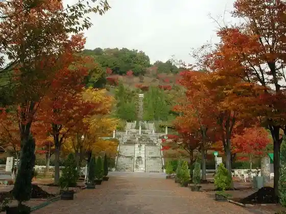
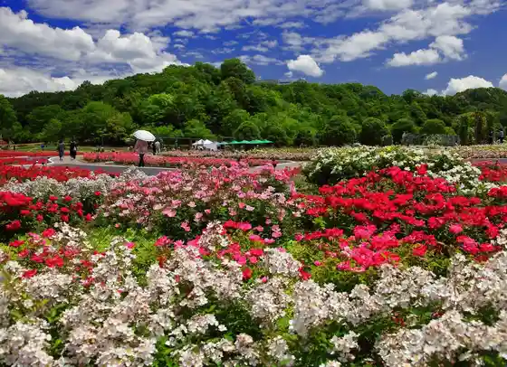
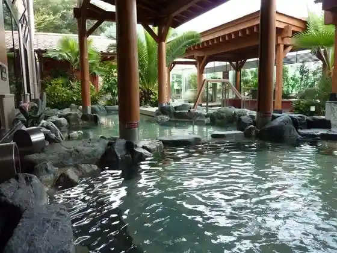
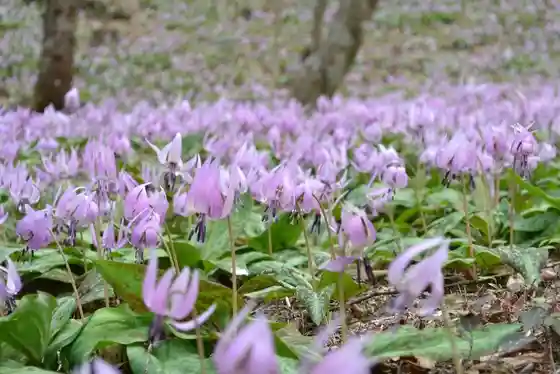

Gifu Warudo Rozu Garden no Autumn Leaves
Kani, Gifu · 0574-63-7373 · Official / source link

Gifu Warudo Rozu Garden
Kani, Gifu · 0574-63-7373 · Official / source link

Spa Resort Yu no Hana Ai Land
Kani, Gifu · 0574-26-1187 · Official / source link

Akechi Castle Ruins
Kani, Gifu · 0574-62-1111 · Official / source link
Hato Sui Yama Promenade
Kani, Gifu · 0574-62-1111 · Official / source link

Kojo Yama no Sembonzakura Ranmaru Furu Sato Forest
Kani, Gifu · 0574-62-1111 · Official / source link
Kani Kawashimo Ryuiki Nature Park
Kani, Gifu · 0574-62-1111 · Official / source link
Kuni Historic Site Mino Kanayama Castle Ruins
Kani, Gifu · 0574-62-1111 · Official / source link
Kanari Tera
Kani, Gifu · 0574-62-1111 · Official / source link
Tenryu Tera
Kani, Gifu · 0574-62-1111 · Official / source link
Wakuwaku Taiken Kan
Kani, Gifu · 0574-65-1515 · Official / source link
Kiso Kawatabi Shi Ba Promenade
Kani, Gifu · Official / source link
Kani Sengoku Yamashiro Museum
Kani, Gifu · 0574-50-8443 · Official / source link
Roadside Station Kani Tte
Kani, Gifu · Official / source link
Hisabisa Ri Castle Ruins
Kani, Gifu · 0574-62-1111 · Official / source link
Kani Kanko Koryu Kan
Kani, Gifu · 0574-59-2288 · Official / source link
Ima Castle Ruins
Kani, Gifu · 0574-62-1111 · Official / source link
Kani Kyodo Rekishikan
Kani, Gifu · 0574-64-0211 · Official / source link
Akechimitsuhide Ko Buronzu Zo
Kani, Gifu · 0574-62-1111 · Official / source link
Kani Yasuragi Forest
Kani, Gifu · 0574-62-1111 · Official / source link
Arakawa Toyokura Museum no Autumn Leaves
Kani, Gifu · 0574-64-1461 · Official / source link
Ranmaru Furu Sato Forest
Kani, Gifu · 0574-62-1111 · Official / source link
Furusato Kawa Park
Kani, Gifu · 0574-62-1111 · Official / source link
Jokyu no Ran Oi Ko no Watashi Ato Tsuchida no Watashi
Kani, Gifu · Official / source link
Kani Bunka Sozo Center Ara
Kani, Gifu · 0574-60-3311 · Official / source link
Jokyu no Ran Oi Towatari no Kosenjo Ato
Kani, Gifu · 0574-62-1111 · Official / source link